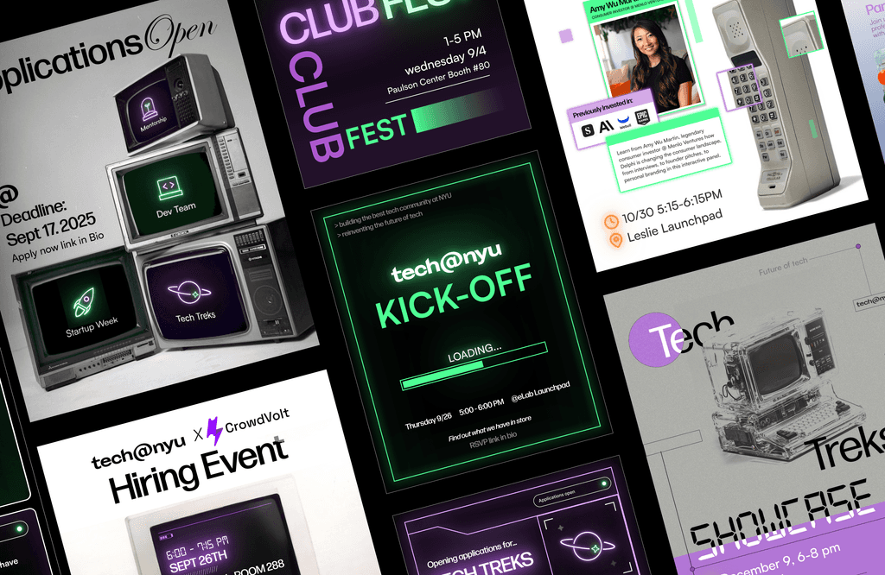
Tech@NYU
Rebrand for Tech@nyu, one of the oldest Tech focused club at NYU.
Overview
As Marketing Director of Tech@NYU in Fall 2025, I identified inconsistencies across the brand’s social media and website and led a full brand overhaul spanning visual assets and web design.
Context
Previous website and social media
When I first assumed the role of Marketing Director, I identified major inconsistencies across the organization’s social media and website. Previous posts lacked cohesion in color, typography, and messaging, while the website, though well built, was missing a strong visual identity and personality to set it apart.
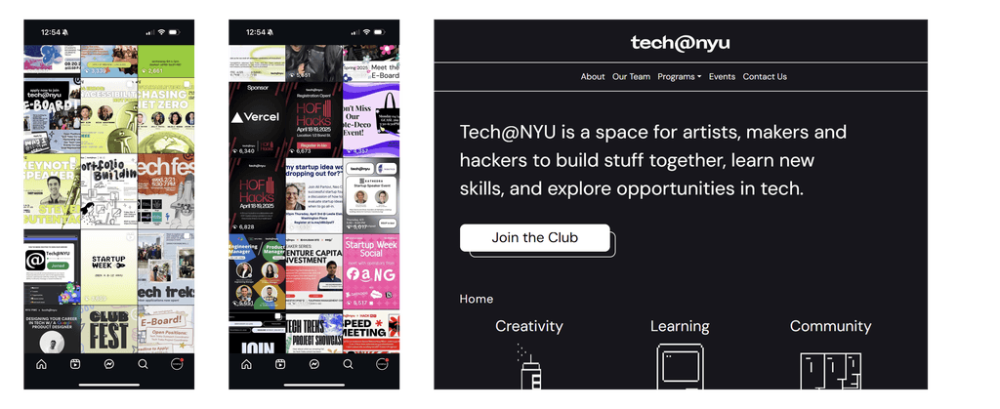
The Task
Redesign the Website (only)
Over the summer, I was asked to help with the website redesign. We had a few ideas to start with, so I explored some additional directions on top of that. But without a clear vision, the process felt a bit aimless and unfocused.
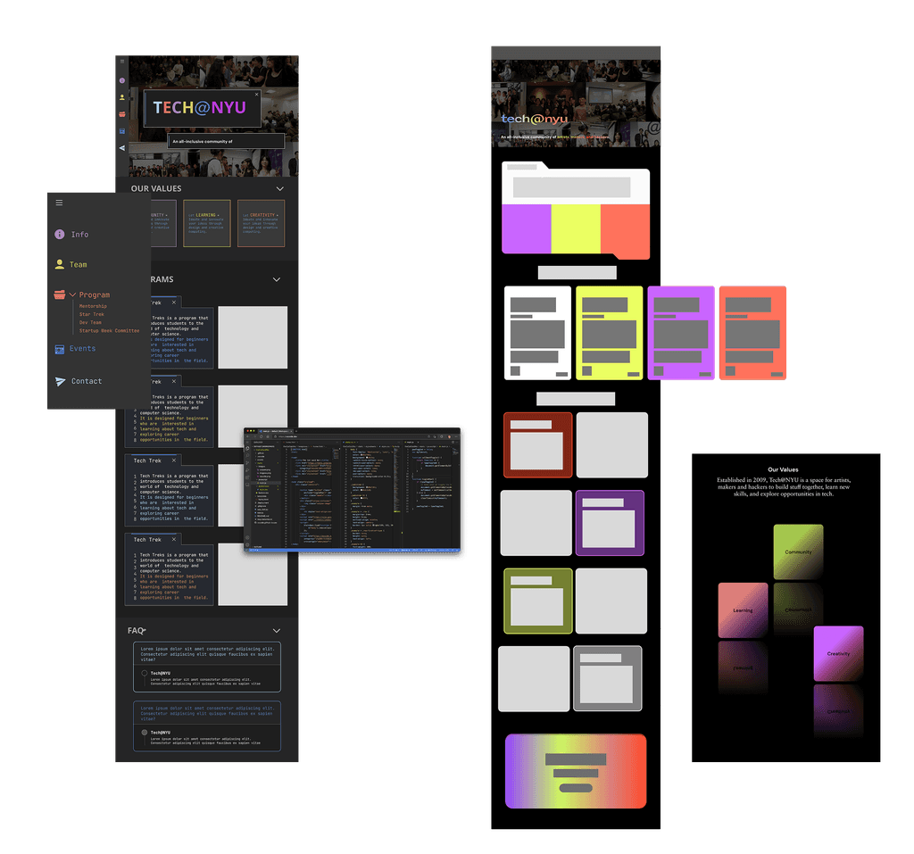
Branding Version #1
I mostly followed my own instincts, leaning toward a more futuristic feel that I felt best represented Tech@NYU. I put together some layout and social media references and experimented with a few concepts.
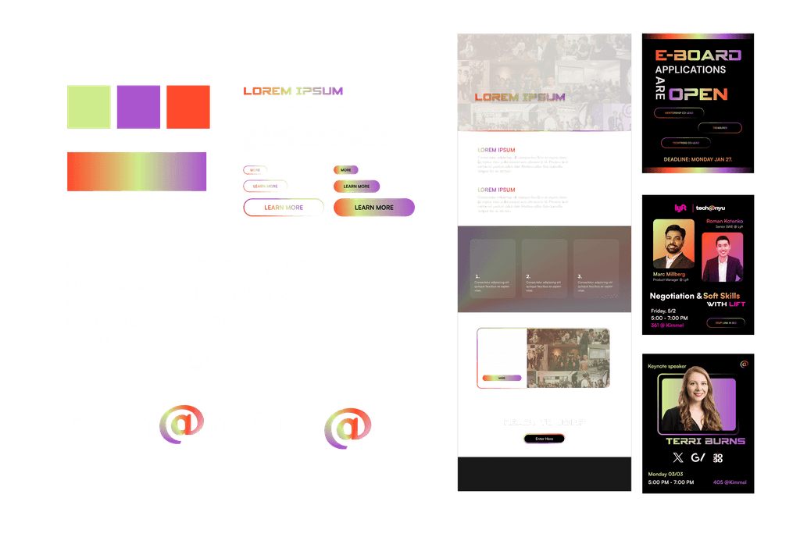
But something didn’t feel right...
The design didn’t fully capture the essence of Tech@NYU. Something felt missing, and I knew we could do better.
Starting from Scratch
TLDR: Rebranding, then website design
I dug into the club’s history and reviewed past social media and website content, but most importantly, I organized a strategy session with the president and vice president. I came in with a set of guiding questions: what the brand is, what it could become, and what it should be.
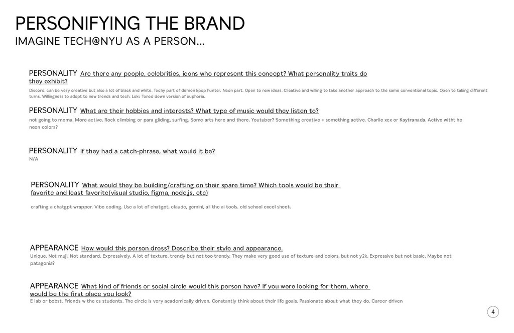
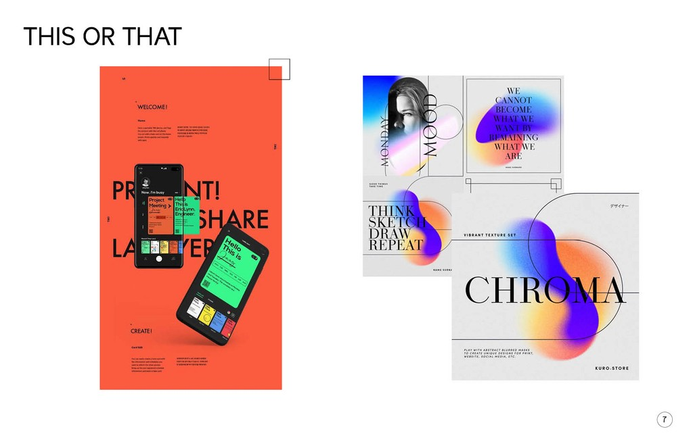
After researching, I gathered a few key ideas that best summarized the club:
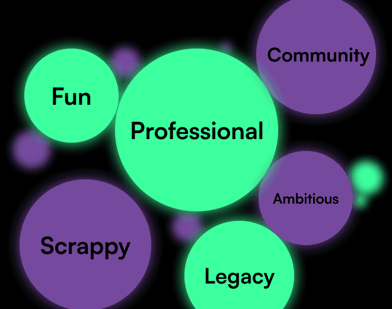
Finalized branding
After receiving confirmation from leadership, I hammered down the basics of the brand guideline
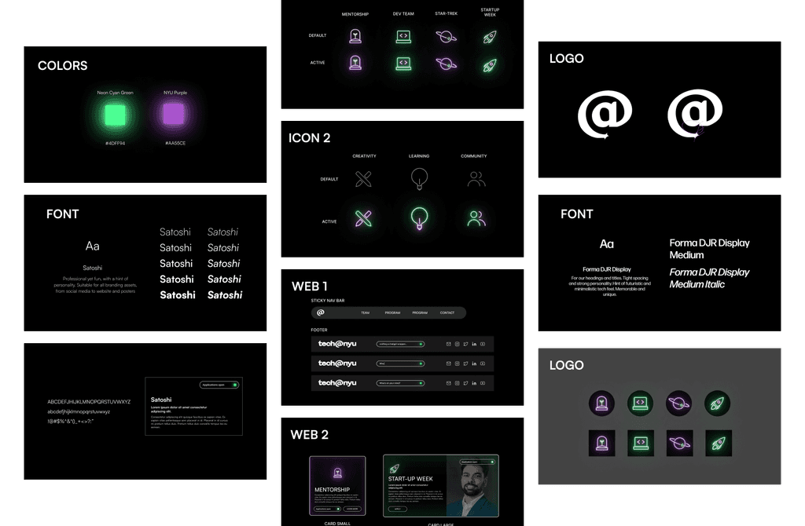
Web design
You can view the live website here: techatnyu.rog
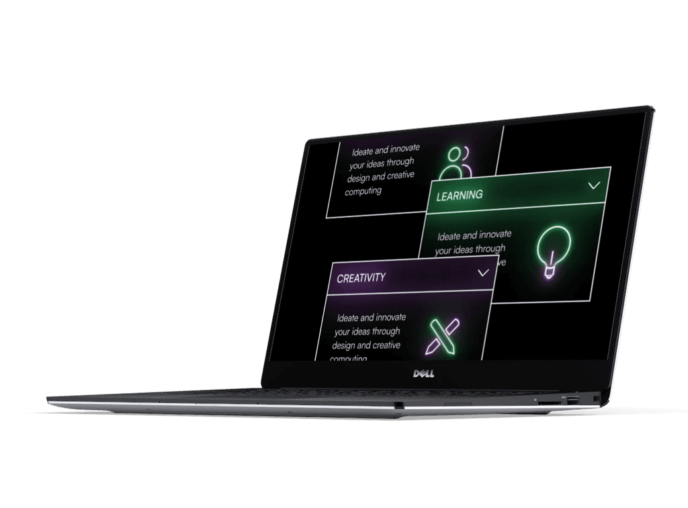
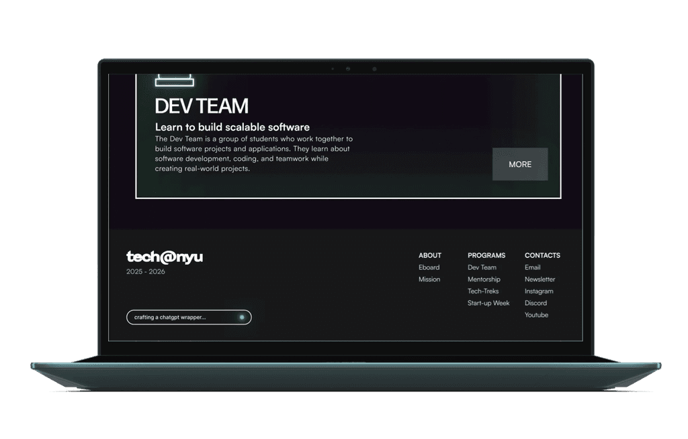
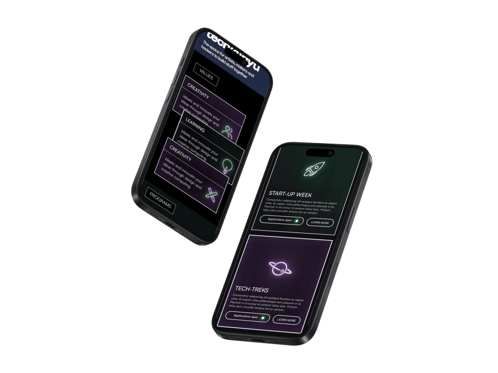
Social Media Posts
Various layouts for instagram (@techatnyu)
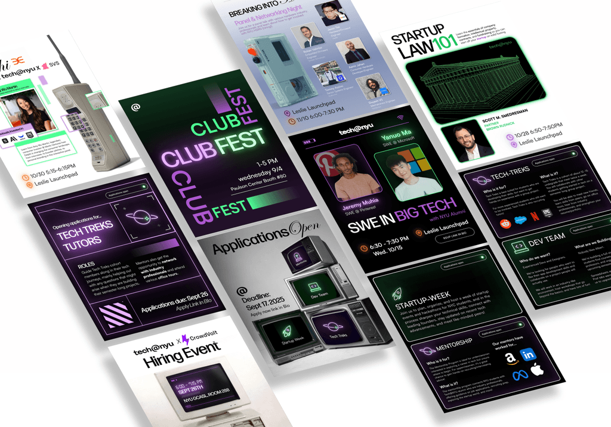
Other Assets
In addition to the website and social media, I also designed and created a new club fest board focused on reusability
With support from fellow members during execution, I focused on building a sustainable design that could be reused year after year. Printed sheets were placed under protective covers, making them simple to replace with new information or images.
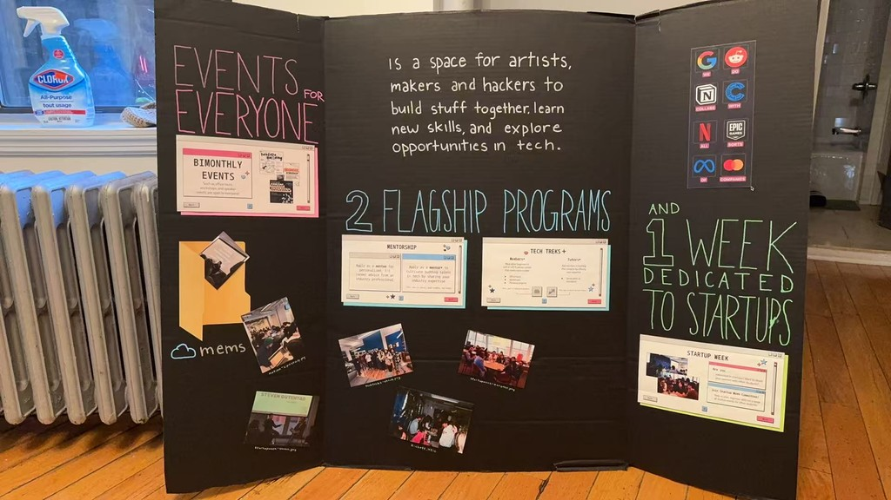
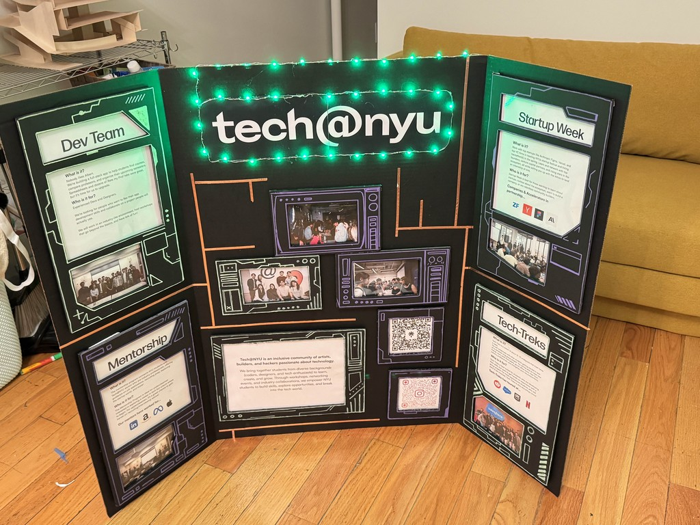
Outcome & Reflection
An incredibly rewarding process
This rebrand achieved tremendous success, particularly across social media:
- Reached nearly 180,000 accounts within the first two months
- Drove a 500% increase in overall reach + 1000% increase in engagement
- Helped the club surpass 3,000 followers
Through this experience, I learned that a detour doesn’t mean failure; it can be a step in the right direction
I'm grateful for the creative freedom and trust tech@nyu gave me to lead this project from start to finish :)
Thanks for reading!
Want to learn more? Curious about the details? Feel free to reach out to me at